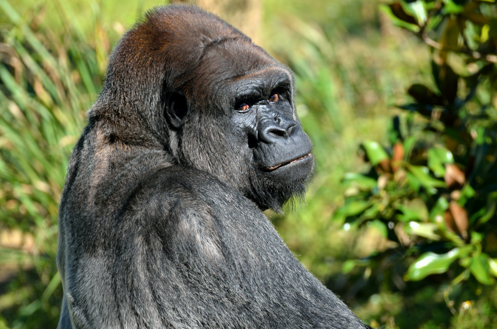

Le gorille à dos argenté
Les gorilles partagent 98,3 % de leur ADN avec les humains. Ces animaux charismatiques et intelligents nous surprennent par leurs comportements et leurs émotions très similaires aux nôtres. Ces singes imposants, aux larges épaules et aux mains puissantes, vivent en « familles » de cinq à dix individus, qui sont sous l’autorité d’un mâle dominant. Parfois, ce nombre peut s’élever à plus de 50.
> EN SAVOIR PLUS